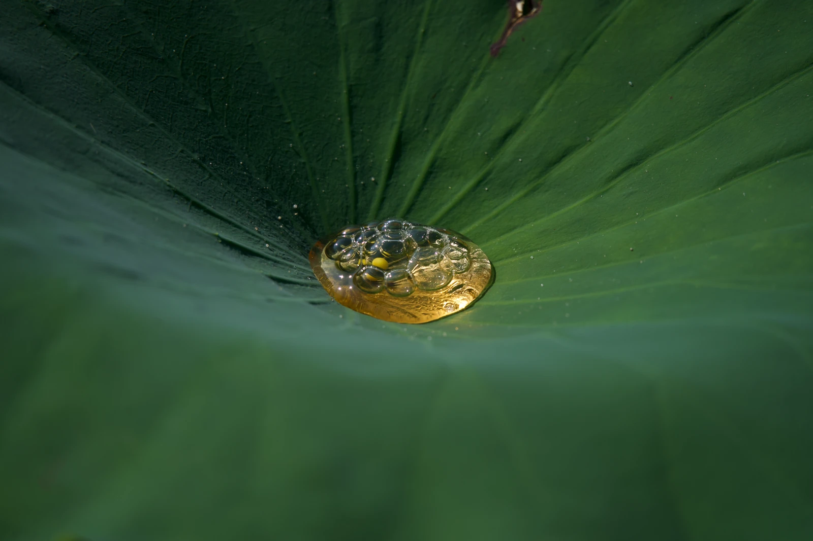

从预处理开始
先确定原片的曝光和影调，再选胶片、显影与印相。想知道画面变在哪一步，可以在暗房笔记里看同一张底片的两次印相。
暗房笔记Silverphase
把自己的照片
带进暗房。
免费、开源，在设备上完成胶片模拟。
iPhone 与 iPad 正式版在中国大陆以外的 App Store 提供。Mac 安装包采用 ad hoc 签名，未经过 Apple 公证。

先确定原片的曝光和影调，再选胶片、显影与印相。想知道画面变在哪一步，可以在暗房笔记里看同一张底片的两次印相。
暗房笔记Silverphase
免费、开源，在设备上完成胶片模拟。
iPhone 与 iPad 正式版在中国大陆以外的 App Store 提供。Mac 安装包采用 ad hoc 签名，未经过 Apple 公证。